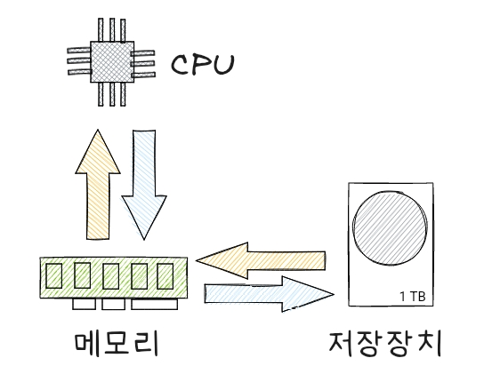
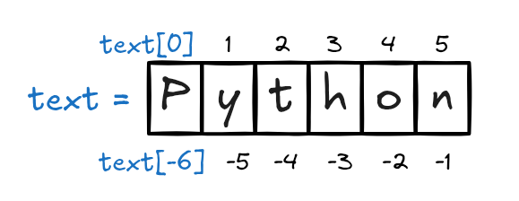
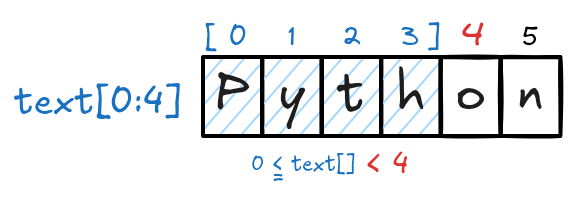
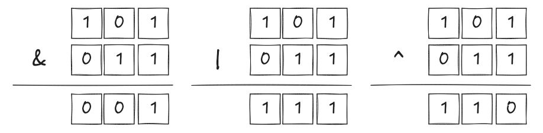
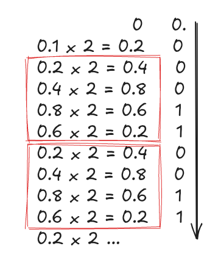

# 변수
x = 10
y = "Hello"
# 상수 (Python에서는 관례적으로 대문자로 작성)
PI = 3.14159
# 리터럴
print(100) # 정수 리터럴
print(3.14) # 실수 리터럴
print("Python") # 문자열 리터럴100
3.14
Python데이터 저장은 일반적으로 저장장치계층에 따라 CPU, 메모리(RAM), 저장장치(HDD, SSD 등)을 이용한다. 이중 프로그래밍에 있어 밀접한 관련이 있는 저장소는 메모리(RAM)이다.

| 구분 | 컴퓨터 저장 장치 (RAM) | 프로그래밍 언어의 변수 |
|---|---|---|
| 역할 | 데이터를 임시로 저장하여 CPU가 빠르게 접근할 수 있도록 함 | 특정 데이터를 저장하기 위해 이름(참조)을 붙여서 관리 |
| 데이터 저장 위치 | 메모리 주소(숫자 형태)로 데이터를 저장함 | 변수 이름을 통해 메모리 주소를 간접적으로 참조함 |
| 접근 방식 | CPU가 메모리 주소를 이용해 데이터에 직접 접근 | 프로그래머는 변수 이름으로 데이터를 쉽게 접근 및 수정 |
| 예시 | 메모리 주소 0x7ffeefbff4c0에 값 10 저장 |
변수 x = 10 → x는 내부적으로 메모리 주소에 연결됨 |
변수, 상수는 프로그래밍에서 데이터를 저장하고 관리하는 개념이다.

변수란 값을 변경할 수 있는 저장 공간에 붙여 높은 이름(태그, 주소 등)을 말한다. 이 변수를 통해 데이터를 쉽게 읽고 수정할 수 있다.
상수란 값을 변경할 수 없는 저장 공간을 말한다.
const, final 등의 키워드를 사용하여 선언함 (언어별 상수 키워드 참고)저장 공간에 실제 저장하는 값을 말한다.
아래는 파이썬 예제이다.
# 변수
x = 10
y = "Hello"
# 상수 (Python에서는 관례적으로 대문자로 작성)
PI = 3.14159
# 리터럴
print(100) # 정수 리터럴
print(3.14) # 실수 리터럴
print("Python") # 문자열 리터럴100
3.14
Python파이썬에서는 상수를 만드는 “const”와 같은 키워드를 제공하지 않는다. 관례적으로 상수인 경우 변수명을 대문자로 작성한다(개발자간 암묵적인 규칙).
자료형은 데이터의 종류를 나타내는 것이다. 프로그래밍에서 데이터를 다룰 때, 컴퓨터가 그 데이터의 성격을 이해할 수 있도록 자료형을 사용한다.
graph LR
A[Python Data Types] --> B[Numeric Types]
A --> C[Sequence Types]
A --> D[Mapping Type]
A --> E[Set Types]
A --> F[Boolean Type]
A --> G[None Type]
A --> H[Binary Types]
B --> B1[int]
B --> B2[float]
B --> B3[complex]
C --> C1[list]
C --> C2[tuple]
C --> C3[range]
C --> C4[str]
D --> D1[dict]
E --> E1[set]
E --> E2[frozenset]
F --> F1[bool]
G --> G1[NoneType]
H --> H1[bytes]
H --> H2[bytearray]
H --> H3[memoryview]
10(정수), 3.14(실수)"안녕하세요", 'Python'True)과 거짓(False)만을 표현하는 자료형.True, False[1, 2, 3], ["a", "b", "c"](1, 2, 3){"이름": "철수", "나이": 20}{1, 2, 3}# 숫자형
x = 10
y = 3.14
# 문자열
name = "Python"
# 논리값(불리언)
is_valid = True
# 리스트
numbers = [1, 2, 3]
# 튜플
coordinates = (10, 20)
# 딕셔너리
person = {"name": "Alice", "age": 25}
# 집합
unique_numbers = {1, 2, 3, 4}파이썬에서 숫자형 자료형은 숫자를 저장하고 연산할 수 있는 데이터 타입이다. 크게 정수형, 실수형, 복소수형으로 나뉜다.
정수형(Integer, int) …, -1, 0, 1, …과 같이 정수를 표현하는 자료형이다.
a = 10 # 양의 정수
b = -5 # 음의 정수
c = 0 # 0도 정수
d = 999999999999999999999 # 매우 큰 정수도 가능
print(type(a)) # <class 'int'><class 'int'>실수형(Floating Point, float)은 실수를 표현하는 자료형이다.
예제
:
x = 3.14 # 일반적인 실수
y = -2.71 # 음수 실수
z = 1.2e3 # 1.2 × 10^3 = 1200.0
w = 5e-4 # 5 × 10^(-4) = 0.0005
print(type(x)) # <class 'float'><class 'float'>복소수형(Complex Number, complex)은 복소수를 표현하는 자료형이다.
j를 사용하여 표현num1 = 3 + 4j # 3 + 4i (수학에서의 허수 i를 j로 표현)
num2 = -2 - 5j
print(num1.real) # 실수부: 3.03.0print(num1.imag) # 허수부: 4.04.0print(type(num1)) # <class 'complex'><class 'complex'>숫자형 간 변환이 가능하며, int(), float(), complex()를 사용한다.
print(int(3.14)) # 3 (실수를 정수로 변환)3print(float(5)) # 5.0 (정수를 실수로 변환)5.0print(complex(2)) # (2+0j) (정수를 복소수로 변환)(2+0j)숫자형과 관련된 내장함수 예이다.
| 함수 | 설명 | 예제 |
|---|---|---|
abs(x) |
절댓값 반환 | abs(-5) → 5 |
round(x, n) |
반올림 (소수점 n자리까지) | round(3.14159, 2) → 3.14 |
pow(x, y) |
x의 y제곱 (거듭제곱) |
pow(2, 3) → 8 |
divmod(x, y) |
(몫, 나머지) 튜플 반환 |
divmod(10, 3) → (3, 1) |
print(abs(-7)) # 7t7print(round(3.14159, 2)) # 3.143.14print(pow(2, 3)) # 88print(divmod(10, 3)) # (3, 1)(3, 1)파이썬에서 문자열(String, str)은 문자들의 연속된 집합으로, 텍스트 데이터를 저장하는 자료형이다. 작은따옴표(')나 큰따옴표(")로 감싸서 표현한다.
문자열은 따옴표를 사용하여 생성할 수 있다.
text1 = 'Hello' # 작은따옴표 사용
text2 = "Python" # 큰따옴표 사용
text3 = '''Hello''' # 작은따옴표 세 개 사용
text4 = """Python""" # 큰따옴표 세 개 사용
print(type(text1)) # <class 'str'><class 'str'>''' 또는 """)는 여러 줄 문자열을 만들 때 사용multi_line = """이것은
여러 줄의
문자열입니다."""
print(multi_line)이것은
여러 줄의
문자열입니다.문자열은 인덱스를 사용하여 개별 문자에 접근할 수 있다(인덱싱). 인덱스는 0부터 시작하며, 음수 인덱스를 사용하면 뒤에서부터 접근 가능하다.

text = "Python"
print(text[0]) # 'P'Pprint(text[-1]) # 'n' (뒤에서 첫 번째 문자)n
text = "Python"
print(text[0:4]) # 'Pyth' (0부터 3까지)Pythprint(text[:3]) # 'Pyt' (처음부터 2까지)Pytprint(text[2:]) # 'thon' (2부터 끝까지)thonprint(text[-4:-1])# 'tho' (뒤에서 4번째부터 뒤에서 2번째까지)thoprint(text[::-1]) # 'nohtyP' (문자열 뒤집기)nohtyP파이썬의 문자열은 더하기(+)와 곱하기(*) 연산을 지원한다.
| 연산자 | 설명 | 예제 |
|---|---|---|
+ |
문자열 연결 | 'Hello' + 'World' → 'HelloWorld' |
* |
문자열 반복 | 'Python' * 3 → 'PythonPythonPython' |
a = "Hello"
b = "World"
print(a + " " + b) # "Hello World"Hello Worldc = "Python"
print(c * 3) # "PythonPythonPython"PythonPythonPythonlen() 함수를 사용하면 문자열의 길이를 확인할 수 있다.
text = "Hello Python"
print(len(text)) # 1212파이썬에선 문자열 조작을 위한 다양한 함수가 제공된다.
| 함수 | 설명 | 예제 |
|---|---|---|
upper() |
대문자로 변환 | "hello".upper() → "HELLO" |
lower() |
소문자로 변환 | "PYTHON".lower() → "python" |
strip() |
공백 제거 | " hello ".strip() → "hello" |
replace(a, b) |
문자열 치환 | "Hello".replace("H", "J") → "Jello" |
split(sep) |
문자열 분할 | "a,b,c".split(",") → ['a', 'b', 'c'] |
join(iterable) |
문자열 합치기 | " ".join(['Hello', 'World']) → "Hello World" |
find(sub) |
문자열 찾기 (인덱스 반환) | "Python".find("y") → 1 |
count(sub) |
특정 문자 개수 세기 | "banana".count("a") → 3 |
startswith(sub) |
특정 문자열로 시작하는지 확인 | "Python".startswith("Py") → True |
endswith(sub) |
특정 문자열로 끝나는지 확인 | "Python".endswith("on") → True |
text = " hello python "
print(text.upper()) # " HELLO PYTHON " HELLO PYTHON print(text.strip()) # "hello python"hello pythonprint(text.replace("python", "world")) # " hello world " hello world print("apple,banana,grape".split(",")) # ['apple', 'banana', 'grape']['apple', 'banana', 'grape']print("-".join(["2025", "01", "30"])) # "2025-01-30"2025-01-30print("banana".count("a")) # 33파이썬에서 문자열 포맷팅은 변수 값을 문자열에 삽입하는 방법이다. 여러 가지 방식으로 문자열을 포맷할 수 있으며, 각 방식은 특정한 사용 사례에 따라 적합하다. 아래는 파이썬에서 문자열 포맷팅을 위한 주요 방법들이다.
이 방식(구식 방식)은 C 언어 스타일의 포맷팅으로, 문자열 안에 % 기호를 사용하여 변수를 삽입한다.
name = "Alice"
age = 30
result = "Name: %s, Age: %d" % (name, age)
print(result)Name: Alice, Age: 30%s: 문자열 삽입%d: 정수 삽입%f: 부동소수점 숫자 삽입str.format()은 더 직관적인 방식(중간 방식)으로, {} 플레이스홀더를 사용하여 변수 값을 삽입한다. 포맷팅할 자리에 {}를 넣고, format() 메서드 안에 변수 값을 전달한다.
name = "Alice"
age = 30
result = "Name: {}, Age: {}".format(name, age)
print(result)Name: Alice, Age: 30result = "Name: {0}, Age: {1}".format(name, age)
print(result) # 출력: Name: Alice, Age: 30Name: Alice, Age: 30result = "Name: {name}, Age: {age}".format(name="Alice", age=30)
print(result)Name: Alice, Age: 30f-string은 가장 최신의 방식(Python 3.6 이상)으로, 문자열 앞에 f를 붙이고, 중괄호 {} 안에 변수나 표현식을 직접 삽입하는 방법이다. 가독성이 좋고 성능도 우수하다.
name = "Alice"
age = 30
result = f"Name: {name}, Age: {age}"
print(result) # 출력: Name: Alice, Age: 30Name: Alice, Age: 30x = 5
result = f"5 * 2 = {x * 2}"
print(result) # 출력: 5 * 2 = 105 * 2 = 10| 방식 | 설명 | 장점 | 단점 |
|---|---|---|---|
% 포맷팅 |
C 스타일 포맷팅 | 간단하고 직관적 | 가독성이 떨어짐 |
str.format() |
{}와 format() 메서드 사용 |
위치 인자, 키워드 인자 지원 | 비교적 오래된 방식 |
| f-strings | f"{}"를 사용하여 변수를 직접 삽입 |
가독성, 성능, 간결함 | Python 3.6 이상만 지원 |
str.format()은 여전히 유용하지만, 최신 코드에서는 f-string으로 대체% 포맷팅은 구식 방식이며, 가독성 및 유지보수 측면에서 추천되지 않음파이썬에서는 문자열을 사전 순서(ASCII1 값 기준)로 비교한다.
| 연산자 | 설명 | 예제 |
|---|---|---|
== |
문자열이 같은지 비교 | "apple" == "apple" → True |
!= |
문자열이 다른지 비교 | "apple" != "banana" → True |
<, > |
사전순 비교 | "apple" < "banana" → True |
print("apple" == "apple") # TrueTrueprint("apple" != "banana") # TrueTrueprint("apple" < "banana") # True (사전순 비교)Trueprint("Zebra" > "apple") # False ('Z'의 ASCII 값이 'a'보다 작음)Falseint(), float()를 사용하면 문자열을 숫자로 변환할 수 있다.
num_str = "100"
print(int(num_str) + 5) # 105 (문자열 → 정수)105float_str = "3.14"
print(float(float_str) * 2) # 6.28 (문자열 → 실수)6.28문자열 관련 내용을 정리하면 다음과 같다.
| 개념 | 설명 | 예제 |
|---|---|---|
| 문자열 생성 | 작은따옴표 또는 큰따옴표 사용 | 'Hello', "Python" |
| 인덱싱 | 특정 문자 접근 | "Python"[0] → 'P' |
| 슬라이싱 | 문자열 일부 가져오기 | "Python"[1:4] → 'yth' |
| 연산 | + (연결), * (반복) |
"Hello" + "World", "Hi" * 3 |
| 내장 함수 | 문자열 조작 | "hello".upper(), "text".replace("t", "T") |
| 포맷팅 | 변수 포함 | f"이름: {name}", "이름: {}".format(name) |
| 비교 | 문자열 비교 | "apple" < "banana" → True |
파이썬의 문자열은 변경할 수 없는(Immutable) 객체 (뮤터블과 이뮤터블 참고)이지만, 다양한 함수와 연산을 활용하여 쉽게 다룰 수 있다.
파이썬에서 불리언(Boolean, bool) 자료형은 참(True)과 거짓(False)을 표현하는 데이터 타입이다.
True 또는 False 값을 가지며, 첫 글자는 반드시 대문자로 작성한다(true, false는 오류 발생).
a = True
b = False
print(type(a)) # <class 'bool'>
print(type(b)) # <class 'bool'><class 'bool'>
<class 'bool'>논리 연산자(and, or, not)를 사용하여 조합 가능하다.
AND 연산은 두 값이 모두 True일 때만 결과가 True가 된다.| A | B | A AND B |
|---|---|---|
| False | False | False |
| False | True | False |
| True | False | False |
| True | True | True |
OR 연산은 두 값 중 하나라도 True일 때 결과가 True가 된다.| A | B | A OR B |
|---|---|---|
| False | False | False |
| False | True | True |
| True | False | True |
| True | True | True |
NOT 연산은 입력 값이 True이면 False로, False이면 True로 바꾼다.| A | NOT A |
|---|---|
| False | True |
| True | False |
이 표들은 불리언 논리에서 사용하는 기본적인 연산들로, 프로그래밍에서 조건문이나 제어 흐름을 처리할 때 자주 사용된다.
| 연산자 | 설명 | 예제 |
|---|---|---|
and |
두 값이 모두 참이면 True |
True and True → True |
or |
하나라도 참이면 True |
True or False → True |
not |
값을 반대로 변환 | not True → False |
print(True and False) # FalseFalseprint(True or False) # TrueTrueprint(not True) # FalseFalseTrue는 1, False는 0과 동일하게 동작한다. int()와 bool()을 사용하여 변환 가능하다.
print(int(True)) # 11print(int(False)) # 00print(bool(1)) # TrueTrueprint(bool(0)) # FalseFalsebool() 함수를 사용해 참과 거짓을 판별할 수 있다. 아래 값들은 False(거짓)로 간주된다.
00.0'' (빈 문자열)None[] (빈 리스트){} (빈 딕셔너리)set() (빈 집합)print(bool(0)) # FalseFalseprint(bool(0.0)) # FalseFalseprint(bool("")) # FalseFalseprint(bool([])) # FalseFalseprint(bool(None)) # FalseFalseprint(bool("Python")) # True (문자가 있으면 True)Trueprint(bool([1, 2, 3])) # True (리스트에 요소가 있으면 True)True불리언 자료형은 조건문 (if), 반복문 (while), 논리 연산 등에 널리 사용된다.
파이썬에서는 산술, 비교, 논리, 대입 등과 같은 연산자를 제공한다.
파이썬에서 산술 연산자는 숫자 값을 계산하는 연산자이다. 기본적인 사칙연산뿐만 아니라 나머지 연산, 거듭제곱 연산, 몫 연산도 제공한다.
| 연산자 | 설명 | 예제 | 결과 |
|---|---|---|---|
+ |
덧셈 | 10 + 5 |
15 |
- |
뺄셈 | 10 - 5 |
5 |
* |
곱셈 | 10 * 5 |
50 |
/ |
나눗셈 (소수점 포함) | 10 / 3 |
3.3333 |
// |
몫 연산 (정수 나눗셈) | 10 // 3 |
3 |
% |
나머지 연산 | 10 % 3 |
1 |
** |
거듭제곱 | 2 ** 3 |
8 |
a = 10
b = 5
print(a + b) # 15
print(a - b) # 515
5x = 10
y = 3
print(x * y) # 30
print(x / y) # 3.3333333333333335 (소수 포함)30
3.3333333333333335x = 10
y = 0
print(x / y) # ZeroDivisionError--------------------------------------------------------------------------- ZeroDivisionError Traceback (most recent call last) Cell In[63], line 3 1 x = 10 2 y = 0 ----> 3 print(x / y) # ZeroDivisionError ZeroDivisionError: division by zero
결과값이 정수로 반환된다(소수점 이하 버림).
print(10 // 3) # 3
print(-10 // 3) # -4 (음수는 반올림이 아니라 내림)3
-4print(10 % 3) # 1
print(15 % 4) # 31
3print(2 ** 3) # 8 (2의 3제곱)
print(5 ** 2) # 25 (5의 제곱)
print(9 ** 0.5) # 3.0 (제곱근)8
25
3.0int와 float이 함께 연산되면 결과는 float이 된다.
print(5 + 2.5) # 7.5 (int + float = float)7.5print(10 / 2) # 5.0 (나눗셈 결과는 항상 float)5.0print(int(10 / 2)) # 5 (int형 변환)5파이썬의 산술 연산자는 수학과 동일한 우선순위를 따른다. 우선순위가 높을수록 먼저 계산된다.
다음은 파이썬 연산자 우선순위를 높은 순서부터 낮은 순서로 정리한 표이다.
| 우선순위 | 연산자 | 설명 |
|---|---|---|
| 1 | () |
괄호: 가장 높은 우선순위를 가짐 |
| 2 | ** |
거듭제곱 |
| 3 | +x, -x, ~x |
단항 연산자: 양수, 음수, 비트 NOT |
| 4 | *, /, //, % |
곱셈, 나눗셈, 몫, 나머지 |
| 5 | +, - |
덧셈, 뺄셈 |
| 6 | <<, >> |
비트 시프트: 왼쪽/오른쪽 이동 |
| 7 | & |
비트 AND |
| 8 | ^ |
비트 XOR |
| 9 | \| |
비트 OR |
| 10 | ==, !=, >, <, >=, <=, is, is not, in, not in |
비교 연산자 |
| 11 | not |
논리 NOT |
| 12 | and |
논리 AND |
| 13 | or |
논리 OR |
| 14 | if ... else |
삼항 조건 연산자 |
| 15 | =, +=, -=, *=, /=, //=, %=, **=, &=, |=, ^=, >>=, <<= |
할당(대입) 연산자 |
| 16 | lambda |
람다 표현식 |
(): 가장 높은 우선순위를 가지며, 연산 순서를 명시적으로 지정할 때 사용**: 예를 들어, 2 ** 3 ** 2는 2 ** (3 ** 2)로 계산됨not > and > or 순서로 우선순위를 가진다==, !=, >, < 등은 같은 우선순위를 가지며, in, is 같은 연산자도 여기에 포함됨a if 조건 else b 형태로 사용됨print(2 + 3 * 4) # 14 (* 먼저 계산)14print((2 + 3) * 4) # 20 (괄호 안 먼저 계산)20print(2 ** 3 * 4) # 32 (** 먼저 계산)32우선 순위가 있는 연산시 혼동을 피하기 위해 괄로로 묶어 계산한다.
다음은 연산자 우선순위 관련 예제이다.
result = 2 ** 3 ** 2
print(result) # 출력: 512512거듭제곱 ** 연산자는 오른쪽 결합(right-associative)이다. 따라서 2 ** (3 ** 2)로 계산되어 2 ** 9 = 512가 된다.
result = 2 + 3 * 4
print(result) # 출력: 1414곱셈 *이 덧셈 +보다 우선순위가 높아 먼저 계산된다. 3 * 4 = 12 후에 2 + 12 = 14로 결과가 나온다.
and, or, not 우선순위result = True or False and not False
print(result) # 출력: TrueTruenot이 가장 먼저 계산 → not False = Trueand가 or보다 우선 → False and True = FalseTrue or False = True파이썬에서 비교 연산자는 두 값을 비교하고 True 또는 False를 반환하는 연산자이다.
| 연산자 | 의미 | 설명 | 예제 | 결과 |
|---|---|---|---|---|
== |
같음 | 두 값이 같으면 True, 다르면 False |
5 == 5 |
True |
!= |
다름 | 두 값이 다르면 True, 같으면 False |
5 != 3 |
True |
< |
작음 | 왼쪽 값이 오른쪽 값보다 작으면 True |
3 < 5 |
True |
> |
큼 | 왼쪽 값이 오른쪽 값보다 크면 True |
5 > 3 |
True |
<= |
작거나 같음 | 왼쪽 값이 오른쪽 값보다 작거나 같으면 True |
5 <= 5 |
True |
>= |
크거나 같음 | 왼쪽 값이 오른쪽 값보다 크거나 같으면 True |
5 >= 3 |
True |
== (같음)True, 다르면 False를 반환한다.
print(5 == 5) # True
print(5 == 3) # FalseTrue
False!= (다름)True, 같으면 False를 반환한다.
print(5 != 3) # True
print(5 != 5) # FalseTrue
False< (작음)True, 크거나 같으면 False를 반환한다.
print(3 < 5) # True
print(5 < 5) # FalseTrue
False> (큼)True, 작거나 같으면 False를 반환한다.
print(5 > 3) # True
print(5 > 5) # FalseTrue
False<= (작거나 같음)True, 크면 False를 반환한다.
print(3 <= 5) # True
print(5 <= 5) # True
print(6 <= 5) # FalseTrue
True
False>= (크거나 같음)True, 작으면 False를 반환한다.
print(5 >= 3) # True
print(5 >= 5) # True
print(3 >= 5) # FalseTrue
True
Falseprint("apple" < "banana") # True ("a"가 "b"보다 앞에 있음)
print("abc" < "abcd") # True (문자 수가 적은 것이 더 작음)True
TrueTrue는 1, False는 0과 동등하게 취급된다.
print(True == 1) # True
print(False == 0) # True
print(True > False) # True (1 > 0)True
True
Truex = 5
print(3 < x < 10) # True (3 < 5 and 5 < 10)
print(3 < x > 2) # True (3 < 5 and 5 > 2)True
True비교 연산자는 조건문, 반복문, 필터링 등의 다양한 상황에서 활용된다.
파이썬에서 논리 연산자는 여러 개의 조건을 결합하거나 부정할 때 사용한다. 논리 연산자는 and, or, not 세 가지가 있다.
| 연산자 | 설명 | 예제 | 결과 |
|---|---|---|---|
and |
둘 다 True일 때만 True, 하나라도 False이면 False |
True and True |
True |
or |
둘 중 하나라도 True이면 True |
True or False |
True |
not |
True를 False로, False를 True로 변환 |
not True |
False |
연산자 좌우항 둘 다 True여야 True이다.
print(True and True) # TrueTrueprint(True and False) # FalseFalseprint(False and True) # FalseFalseprint(False and False) # FalseFalsex = 10
print(x > 5 and x < 20) # True (둘 다 True)
print(x > 5 and x > 20) # False (하나가 False)True
False연산자 좌우향 중 하나라도 True면 True이다.
print(True or True) # TrueTrueprint(True or False) # TrueTrueprint(False or True) # TrueTrueprint(False or False) # FalseFalsey = 7
print(y < 5 or y > 6) # True (하나가 True)Trueprint(y < 5 or y == 7) # True (하나가 True)Trueprint(y < 5 or y > 10) # False (둘 다 False)False논리값을 반대로 바꿔준다. 즉, True → False, False → True로 반환한다.
print(not True) # False
print(not False) # TrueFalse
Truea = 5
print(not (a > 10)) # True (a > 10이 False이므로 not을 적용하면 True)True논리 연산자는 비교 연산자(>, <, ==, != 등)와 함께 사용되어 조건문을 조합할 때 유용하다.
age = 25
print(age > 18 and age < 30) # True (두 조건이 모두 참)Trueprint(age < 18 or age > 30) # False (둘 다 거짓)Falseprint(not age > 18) # False (age가 18보다 크므로 not을 적용하면 False)False파이썬은 논리 연산을 수행할 때 불필요한 연산을 생략하는 단축 평가(short-circuit evaluation) 를 적용한다.
and 연산자에서 단축 평가False이면 결과가 무조건 False이므로 두 번째 값은 검사하지 않는다.print(False and print("실행되지 않음")) # False만 출력됨Falseor 연산자에서 단축 평가True이면 결과가 무조건 True이므로 두 번째 값은 검사하지 않는다.print(True or print("실행되지 않음")) # True만 출력됨True파이썬에서 True는 1, False는 0과 동일하게 취급된다. 또한, 빈 값(0, None, '', [], {})은 False, 나머지는 True로 평가된다.
print(bool(0)) # FalseFalseprint(bool(1)) # TrueTrueprint(bool("")) # FalseFalseprint(bool("Hi")) # TrueTrue논리 연산자는 단순히 True나 False가 아니라 실제 값을 반환하기도 한다.
and 연산자True이면 두 번째 값을 반환print(10 and 20) # 20 (10이 True이므로 20 반환)20print(0 and 20) # 0 (0이 False이므로 0 반환)0or 연산자True이면 그 값을 반환, False이면 두 번째 값을 반환**print(10 or 20) # 10 (첫 번째 값이 True이므로 그대로 반환)10print(0 or 20) # 20 (첫 번째 값이 False이므로 두 번째 값 반환)20논리 연산자를 정리하면 다음과 같다.
| 연산자 | 설명 | 예제 | 결과 |
|---|---|---|---|
and |
둘 다 True일 때 True |
True and False |
False |
or |
하나라도 True이면 True |
True or False |
True |
not |
True ↔︎ False 변환 |
not True |
False |
논리 연산자는 조건문, 반복문, 복잡한 조건을 평가할 때 필수적으로 사용되며, 단축 평가와 값 반환 방식을 이해하면 더욱 효율적으로 활용할 수 있다.
파이썬에서 대입 연산자(할당 연산자)는 변수에 값을 저장하거나 연산 후 결과를 변수에 저장하는 데 사용한다.
| 연산자 | 설명 | 예제 | 결과 |
|---|---|---|---|
= |
기본 대입 (값을 변수에 저장) | a = 10 |
a에 10 저장 |
+= |
덧셈 후 대입 | a += 5 |
a = a + 5 |
-= |
뺄셈 후 대입 | a -= 3 |
a = a - 3 |
*= |
곱셈 후 대입 | a *= 2 |
a = a * 2 |
/= |
나눗셈 후 대입 | a /= 4 |
a = a / 4 |
//= |
몫 연산 후 대입 | a //= 3 |
a = a // 3 |
%= |
나머지 연산 후 대입 | a %= 2 |
a = a % 2 |
**= |
거듭제곱 후 대입 | a **= 3 |
a = a ** 3 |
우측항을 좌측 좌측항에 대입한다.
=
::: {#155def52 .cell execution_count=112} {.python .cell-code} x = 10 y = 5 print(x) # 10 print(y) # 5
::: {.cell-output .cell-output-stdout} 10 5 ::: :::
연산자 둘 이상을 함께 사용하는 경우이다.
+=, -=, *=, /=, //=, %=, **=
::: {#e843061e .cell execution_count=113} ``` {.python .cell-code} a = 10
a += 5 # a = a + 5 print(a) # 15 ```
::: {.cell-output .cell-output-stdout} 15 ::: :::
::: {#ec914d62 .cell execution_count=114} {.python .cell-code} a -= 3 # a = a - 3 print(a) # 12
::: {.cell-output .cell-output-stdout} 12 ::: :::
::: {#a67cf9b4 .cell execution_count=115} {.python .cell-code} a *= 2 # a = a * 2 print(a) # 24
::: {.cell-output .cell-output-stdout} 24 ::: :::
::: {#2264b7d4 .cell execution_count=116} {.python .cell-code} a /= 4 # a = a / 4 print(a) # 6.0 (나눗셈 결과는 항상 float)
::: {.cell-output .cell-output-stdout} 6.0 ::: :::
::: {#fcd22ba2 .cell execution_count=117} {.python .cell-code} a //= 2 # a = a // 2 print(a) # 3 (정수 나눗셈)
::: {.cell-output .cell-output-stdout} 3.0 ::: :::
::: {#f67da799 .cell execution_count=118} {.python .cell-code} a %= 2 # a = a % 2 print(a) # 1 (나머지 연산)
::: {.cell-output .cell-output-stdout} 1.0 ::: :::
::: {#a65b08fd .cell execution_count=119} {.python .cell-code} a **= 3 # a = a ** 3 print(a) # 1 (1의 3제곱)
::: {.cell-output .cell-output-stdout} 1.0 ::: :::
여러 변수에 값을 한번에 대입하는 경우이다.
가장 우측항을 좌측이로 대입 연산을 이어 나간다.
x = y = z = 100
print(x, y, z) # 100 100 100100 100 100좌측항과 우측항 순서에 맞춰 값을 대입한다.
a, b, c = 1, 2, 3
print(a, b, c) # 1 2 31 2 3파이썬에서는 임시 변수 없이 두 변수의 값을 쉽게 교환할 수 있다.
a, b = 10, 20
a, b = b, a
print(a, b) # 20 1020 10numbers = [1, 2, 3]
x, y, z = numbers
print(x, y, z) # 1 2 31 2 3대입 연산자는 값을 저장하고, 계산을 간단하게 만들며, 여러 변수에 값을 동시에 할당할 때 유용하다.
파이썬에서는 산술 연산자, 비교 연산자, 논리 연산자, 대입 연산자 외에도 다양한 연산자가 있다. 대표적으로 비트 연산자, 멤버 연산자, 식별 연산자가 있다.
비트 연산자는 정수를 이진수(0과 1)로 변환하여 비트 단위로 연산할 때 사용한다.
| 연산자 | 설명 | 예제 (a = 5, b = 3) |
결과 (a = 5(101), b = 3(011)) |
|---|---|---|---|
& |
AND (둘 다 1이면 1) |
a & b |
1 (001) |
| |
OR (하나라도 1이면 1) |
a | b |
7 (111) |
^ |
XOR (다를 때 1) |
a ^ b |
6 (110) |
~ |
NOT (비트 반전, 1의 보수) | ~a |
-6 (음수 표현 방식) |
<< |
왼쪽 시프트 (비트 이동, 2^n 배 증가) |
a << 1 |
10 (1010) |
>> |
오른쪽 시프트 (비트 이동, 2^n 배 감소) |
a >> 1 |
2 (10) |

a = 5 # 101 (2진수)
b = 3 # 011 (2진수)
print(a & b) # 1 (001)1print(a | b) # 7 (111)7print(a ^ b) # 6 (110)6print(~a) # -6 (음수 표현 방식)-6print(a << 1) # 10 (1010) → 2배 증가10print(a >> 1) # 2 (10) → 2배 감소2멤버 연산자는 특정 값이 리스트, 튜플, 문자열 등에 포함되어 있는지 확인할 때 사용한다.
| 연산자 | 설명 | 예제 | 결과 |
|---|---|---|---|
in |
값이 포함되어 있으면 True |
'a' in 'apple' |
True |
not in |
값이 포함되지 않으면 True |
'x' not in 'apple' |
True |
text = "hello"
print('h' in text) # True
print('z' not in text) # TrueTrue
Truenumbers = [1, 2, 3, 4]
print(3 in numbers) # True
print(5 not in numbers) # TrueTrue
True식별 연산자는 두 변수가 같은 객체를 가리키는지 확인할 때 사용한다(==은 값 비교, is는 객체 비교).
| 연산자 | 설명 | 예제 | 결과 |
|---|---|---|---|
is |
같은 객체이면 True |
a is b |
True 또는 False |
is not |
다른 객체이면 True |
a is not b |
True 또는 False |
a = [1, 2, 3]
b = a
c = [1, 2, 3]
print(a is b) # True (같은 객체를 가리킴)Trueprint(a is c) # False (같은 값이지만 다른 객체)Falseprint(a == c) # True (값이 같음)Trueprint(a is not c) # True (다른 객체)True위 연산자들은 비트 연산, 데이터 포함 여부 검사, 객체 비교 등에 유용하게 사용된다.
파이썬에서 주석(Comment)은 코드에 대한 설명을 작성하는 부분으로, 프로그램 실행에는 영향을 주지 않는다. 코드 가독성을 높이고 유지보수를 쉽게 하기 위해 사용한다.
| 주석 유형 | 설명 | 예제 |
|---|---|---|
| 한 줄 주석 | #을 사용하여 작성 |
# 변수 선언 |
| 여러 줄 주석 | """ 또는 '''로 감싸서 작성 |
""" 여러 줄 주석 """ |
여러 줄 # 주석 |
여러 줄에 걸쳐 # 사용 |
# 첫 번째 줄 # 두 번째 줄 |
한 줄 주석(Single-line Comment)은 # 기호를 사용하여 작성한다.
# 변수 선언
x = 10 # x에 10을 할당
print(x) # x 값을 출력# 뒤에 오는 내용은 주석 처리되어 실행되지 않는다.여러 줄 주석(Multi-line Comment)은 여러 줄을 한 번에 주석 처리할 때 사용하며, 보통 큰 설명을 추가할 때 사용한다.
여러 줄에 걸쳐 주석을 추가하는 경우 """ 또는 ''' 사용한다.
"""
이 코드는 사칙연산을 수행하는 코드입니다.
각 연산 결과를 출력합니다.
"""
a = 10
b = 5
print(a + b) # 덧셈
print(a - b) # 뺄셈'''
여러 줄 주석을 사용하여
설명을 추가할 수 있습니다.
'''
print("Hello, World!")""" 또는 '''로 감싸면 여러 줄을 주석 처리할 수 있다. 다만, """와 '''는 문자열 리터럴로도 사용될 수 있으므로, 문서화 문자열(docstring)로 인식될 수 있다.
여러 줄을 주석 처리할 때, #을 각 줄마다 붙이는 방법도 있다.
# 이 코드는 두 숫자를 더하는 코드입니다.
# 결과를 출력합니다.
a = 10
b = 20
print(a + b) # 30 출력30#을 여러 줄에 걸쳐 사용하면 여러 줄을 주석 처리할 수 있다.
x = 10
y = 20
# print(x + y) # 이 줄은 실행되지 않음
print(x * y) # 200 출력200특정 줄을 실행하지 않도록 하여 코드를 테스트할 때 유용하게 사용할 수 있다.
함수의 설명(docstring)을 추가할 때 """ 또는 '''를 사용하면 문서화 문자열(docstring)로 활용할 수 있다.
def add(a, b):
"""두 수를 더하는 함수"""
return a + b
print(add(3, 5)) # 8 출력
help(add)help(add)를 실행하면 함수의 설명이 출력된다.
파이썬 주석은 코드를 이해하기 쉽게 만들고, 디버깅할 때 유용하며, 문서화 목적으로도 활용할 수 있다.
프로그래밍 언어별로 상수를 정의할 때 사용하는 키워드를 아래와 같다.
| 언어 | 상수 키워드 | 설명 |
|---|---|---|
| C | const, #define |
const로 상수 선언, #define은 전처리기 지시문으로 상수 정의 |
| C++ | const, constexpr |
const는 변경 불가 변수, constexpr은 컴파일 시간 상수 |
| Java | final |
변수에 final을 붙이면 값 변경 불가 (상수로 사용) |
| C# | const, readonly |
const는 컴파일 타임 상수, readonly는 런타임 초기화 후 변경 불가 |
| Python | (키워드 없음) | 대문자 변수명으로 상수 표현 (관례), 변경 방지 기능 없음 |
| JavaScript | const |
재할당 불가능한 변수 선언, 객체나 배열의 내부 값은 변경 가능 |
| Swift | let |
상수 선언 시 사용, 한 번 초기화된 후 값 변경 불가 |
| Kotlin | val, const val |
val은 변경 불가 변수, const val은 컴파일 타임 상수 |
| Go | const |
컴파일 타임 상수 선언에 사용 |
| Rust | const, let |
const는 상수, let은 기본 변수 선언 (불변성은 mut 유무로 결정) |
| TypeScript | const |
JavaScript와 동일하게 상수 선언 |
| PHP | define(), const |
define() 함수 또는 const 키워드로 상수 선언 |
| Ruby | (키워드 없음) | 대문자 변수명으로 상수 표현, 재할당 시 경고만 발생 |
const는 값 재할당은 불가능하지만, 객체나 배열 내부의 데이터는 변경 가능컴퓨터 프로그래밍에서 실수(소수)를 정확히 표현할 수 없다. 이유는 컴퓨터가 2진수(0과 1)로 숫자를 저장하기 때문이다.

a = 0.1
b = 0.2
c = 0.3
print(a+b == c)
print(a+b)False
0.30000000000000004decimal 모듈(파이썬) 같은 고정 소수점 방식을 사용하거나, 부동소수점 오차를 고려해서 코드를 작성한다.